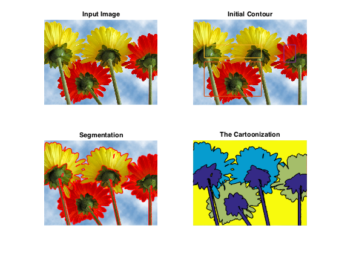
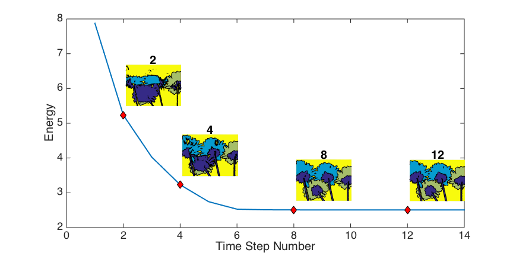
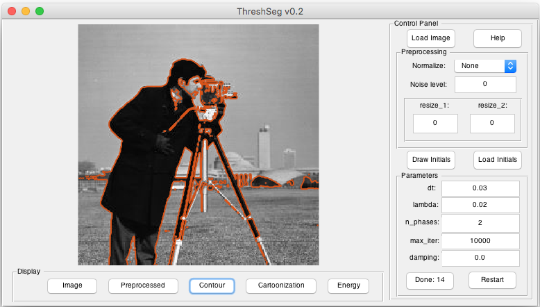

Sample results (see blow).

Abstract
We proposed an efficient iterative thresholding method for multi-phase image segmentation. The algorithm is based on minimizing piecewise constant Mumford-Shah functional in which the contour length (or perimeter) is approximated by a non-local multi-phase energy. The minimization problem is solved by an iterative method. Each iteration consists of computing simple convolutions followed by a thresholding step. The algorithm is easy to implement and has the optimal complexity O(N logN) per iteration. We also show that the iterative algorithm has the total energy decaying property. We present some numerical results to show the efficiency of our method.
Type
Publication
Journal of Computational Physics
Code
A Matlab implementation is available at https://github.com/xywei/threshseg.
Gallery
- Segmentation example: 
- Energy decaying property: 
- Graphical user interface: 